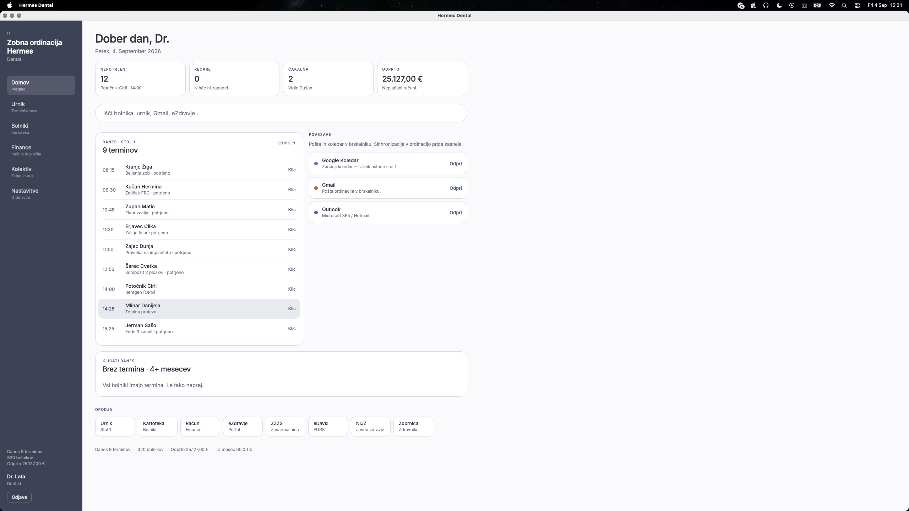
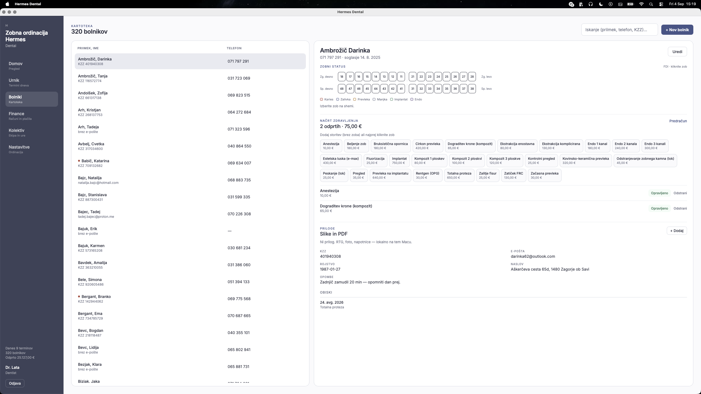
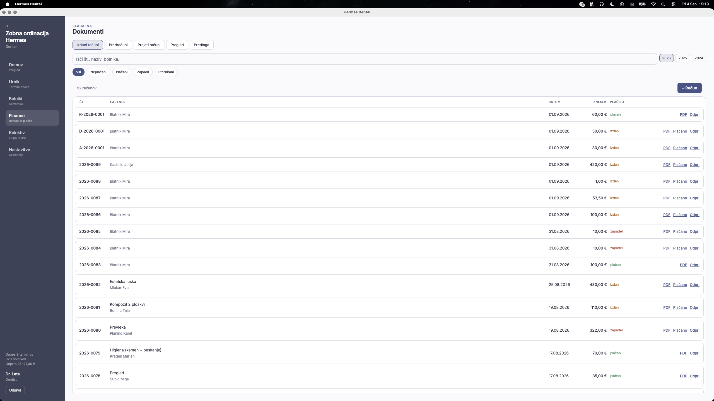

Odprta koda · lokalno · zastonj
Manj časa za papirje.
Več časa za zobe.
Diplomatski urnik, kartoteka, odontogram, načrt zdravljenja in blagajna — na vašem računalniku, brez naročnine, brez oblaka.

Kaj dobite
Vse, kar danes delate ročno.
Hermes naloži vaš dan v računalnik. Vsak element je zasnovan za 30 sekund v živo — med telefonskim klicom, med obiskom, med naslednjim naročilom.

Dan v enem pogledu. Rezervacija med klicem.
Vtipkate ime, dobite termin. Now-line vam pove, kje ste. Odpoved se sama ponudi čakalni vrsti. Now-line vam pove točno, kje v dnevu ste.
- 15-minutni korak 08–18 · Teden / Mesec z zasedenostjo
- Čakalna vrsta — en klik zapolni odpovedan termin
- Recare: po zaključku predlaga naslednji termin (7 / 14 / 182 dni)
- Blokade — malica, dopust, nujni buffer, prazniki
- Slovenski prazniki, now-line, detekcija prekrivanj
- Opomniki: e-pošta · SMS · WhatsApp
Kaj točno dobi zobozdravnik
Vsak termin: ime, trajalnost, status, potrjen/ne, barva po tipu obiska — Pregled, Higiena, Karies, Ekstrakcija, RTG.
Preklici: ko nekdo odpove, sistem ponudi isti slot prvemu v čakalni vrsti. Ni več "nismo videli prostega mesta".
Recare: po zaključenem obisku sistem priporoči ponovni termin glede na tip obiska. Vam pove kdaj poklicati bolniha.
Kopiraj cel teden: ponedeljek–nedeljo kopirate z enim klikom. Ena sezona, ena ura dela.

Kartoteka, ki jo res uporabljate.
Odontogram, načrt zdravljenja, obiski, CAVE opozorila, priponke. Vse v istem oknu. Soglasje imate zabeleženo, alergije so rdeča zastavica.
- Slovensko abecedno urejanje · iskanje po priimku / telefonu / KZZ
- FDI odontogram — kliknite zob, izberite stanje, povežite s storitvijo
- CAVE banner v glavi kartona (alergije, opombe)
- Soglasje za zdravljenje — v časovnem žigu
- Priponke: RTG, fotografije, napotnice — na vašem disku
Kaj točno dobi zobozdravnik
Urejanje kartona: ime · priimek · telefon · email · KZZ · rojstvo · naslov · CAVE · soglasje · opombe — v eni formi, brez prehajanja med zavihki.
Odontogram: 7 stanj (zdrav/karies/zalivka/prevleka/manjka/implantat/endo), FDI oznake, modra pika za načrtovan.
Načrt zdravljenja: storitev × zob × cena. Statusi: odprto → opravljeno → preklicano. En klik → predračun.
Datoteke: RTG, fotografije, PDF napotnice. Nič se ne prenaša nikamor, vse je na vašem disku.

Račun iz načrta. Plačilo en klik.
Predračuni, izdani računi, prejeti računi, pregled, predloga. En klik "Plačano" — račun se zaključi. En klik "V račun" — predračun postane račun.
- Večjezični PDF (SL · EN · DE) · reverse-charge stikalo (76.a člen)
- 8 KPI-jev: izdano · plačano · zapadlo · popusti · storno · predračuni
- Pregled: prihodki po mesecih, načini plačila, naj storitve, naj bolniki
- Prejeti računi: drag&drop, dobavitelji, avtomatsko izpolnjevanje
- Predloga PDF: logo, barvni poudarek, pisave, legal, FURS
- CSV izvoz za računovodjo po letu
Kaj točno dobi zobozdravnik
Načrt → predračun: zakažete postavko po postavko iz načrta zdravljenja, vsaka dobi FDI oznako ("storitev · zob 36"). Predračun je pripravljen.
Plačilo: "Plačano" postane gumb. Zapise se v bazi in v pregledu. Delna plačila so podprta.
FURS ko pride: račun je pripravljen kot PDF in CSV. Ko FURS fiscalization pride, se bo priklopilo.
Predloga: svoj logo, svojo barvo, svoj podpis. Live PDF predogled. Vklopite FURS opombo ali jo skrijete.
Pošteno
Takole izgleda, delno zvečer.
Ni mock. Zajeto med delom, v ponedeljek.
Štiri kartice, ki povejo dan. Univerzalno iskanje, kliki danes, čakalna, recare.
Demo
Ne slika — vse deluje.
Stanje živi v vašem brskalniku. Nič ni poslano nikamor. Kliknite termin, da ga zaključite. Pojdite na Finance → kliknite "Plačano".
Namestitev
Trije kliki. Pet minut. Prvi dan.
Prenesite .app, povlecite v mapo Aplikacije, dvakrat kliknite. Brez terminala, brez nameščanja. macOS 12+, Apple silicon in Intel. Prvi zagon vas vodi skozi nastavitev ordinacije.
- 1Prenesite .app
Kliknite gumb zgoraj. ZIP je 101 MB — samo macOS.
- 2Razširite in povlecite
Dvakrat kliknite ZIP, povlecite Hermes Dental.app v Aplikacije. Če macOS javi “nerazvijalec”, z desno tipko → Odpri.
- 3Prvi zagon
Vpišite ime ordinacije, svoje ime, geslo. Demo pacient je že notri — lahko pobrišete.
Apple silicon + Intel · macOS 12 Monterey ali novejši · podatki ostanejo na vašem Macu
Pošteno
70 % končana. Dela.
Ni še Windows paketa, ni FURS, ni eNaročanja. macOS aplikacija obstaja in deluje.
Že dela
- Prijava osebja, lokalni SQLite
- Urnik, čakalna vrsta, recare
- Kartoteka, obiski, FDI odontogram
- Načrt zdravljenja, cenik 2025/26
- Računi, plačila, PDF, finančni pregled
- macOS aplikacija (Apple silicon), varnostna kopija
Še ni
- Windows .exe namestitev
- FURS / davčna blagajna
- eNaročanje, zVEM, ZZZS šifranti
- Več stolov, več ordinacij
- Pacientova mobilna aplikacija
- SMS/e-pošta izven brskalnika
FAQ
Kratka vprašanja
Je res zastonj?
Da. Ni plana, ni trial, ni "pro". Kodo vzamete in jo uporabljate. Program ostane odprt.
Kam gredo podatki pacientov?
Na vaš računalnik, v lokalno SQLite bazo. Ni oblaka, ni telemetry. Vi ste administrator. Varnostna kopija je en klik.
Je to za koncesijo / ZZZS?
Ne. To je za zasebno (samoplačniško) ordinacijo z enim stolom. Hipokrat to že pokriva za zdravstvene dome — mi tja ne gremo.
Koliko časa vzame, da se naučimo?
Dan ali dva. Vmesnik je v slovenščini, ni prehajanja med orodji, ni učnih videoposnetkov. Vtipkate prvi termin, vidite kako je.
Kaj če kaj ne dela?
Odpri na GitHubu. Podatki ostanejo na vašem disku. Če stvar ne deluje za vas, kodo spreminjate.
Lahko zaračunavam z njim?
Račun, PDF, predračun, izvoz CSV — da. FURS fiscalization še ni, do takrat račune zaključujte, kot ste jih do zdaj.
Kam grejo priponke (RTG, slike)?
Na vaš disk, v mapo bolnika. Ni prenosa v oblak, ni skeniranja, ni tretjih oseb.
Je macOS aplikacija?
Da. Hermes Dental.app je prava .app datoteka — dvakrat klik, odpre se v svojem oknu. Apple silicon in Intel. Podatki gredo v ~/Library/Application Support/HermesDental/.